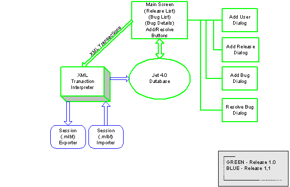

Welcome to Mike Lehman’s
BugTracker.net – Release 1.6
Mike Lehman’s BugTracker.Net
is a Microsoft .net Windows Forms (i.e. desktop) application that allows
you to keep track of software releases and issues (bugs) that arise during the
development and testing of those releases.
Mike Lehman's BugTracker.net supports multiple-user
interaction via XML transaction sets (manually) distributed via e-mail (.mlbt files.)
and a HTML bug report.

Definitions:
- User – A Person who creates or resolves Bug
reports
- Release – A named and numbered version of the
software you’re developing
- Bug – A problem report or feature request that
eventually is “resolved”
- Resolve – The act of changing the status of a
Bug from OPEN to CLOSED with a comment.
There are 5 buttons on
the main Mike Lehman’s BugTracker.net screen:
- Add User… - This allows you to create a User by
supplying his/her name, e-mail address and phone number. The name and e-mail address are
required. The e-mail address is
particularly significant, as it will be used in Release 2.0 and beyond to
provide multi-user interaction.
- Add Release… - This allows you to create a
Release by supplying the name, version number and deadline date. Once you’ve created a release you can
add Bugs to the release.
- Add Bug… - This allows you to create a Bug by supplying
the name of the User reporting the bug, the Priority and Severity of the
bug and a description of the bug.
- Resolve Bug… - This allows you to “close” a Bug
by supplying the name of the User resolving the bug and their comments on
how/why they are resolving the Bug
- Update Bug… - This allows you to
"update" the User to whom the bug is assigned and the
Priority/Serverity and Description.
You can't update closed Bugs.
The 1-2-3 steps to
beginning are:
- Add a User
- Add a Release
- Add your first Bug
When you first start Mike Lehman’s BugTracker.net the list of Releases
is shown in the top ListView. To see
the bugs for that release, click on a release and the list of bugs will be
shown in the Bug list below.
Source Code User’s Notes:
- If you build from source, please put the
btnet1.mdb and btnet1.exe.config files into the bin\Debug directory as
they are needed for the application to run.
- I’ve supplied EMPTY-btnet1.mdb in case you wish
to start over. Simply copy
EMPTY-btnet1.mdb and rename it btnet1.mdb
To share your bug
information with other users:
- MLBT saves a Session-*.mlbt file
each time you run the application
- You can send these .mlbt files to other MLBT
users and they can import them with the File/Import menu command.
- Each .mlbt file contains a zipped/Base64
representation of all the adds and resolves you performed when you were
running Mike Lehman's BugTracker.
- By sending .mlbt files back and forth you have
now made this simple, stand-alone application a multi-user bug tracking system!
There are 3 selections
under the File menu:
- Import MLBT File (see description just above)
- Generate Bug Report… - This generates an HTML
report of your current database and launches your default browser to
view/print
- Exit – Quit the application
There are 8 selections
under the Bug Status menu:
You can set the status of a
bug, when it's not CLOSED, to one of 4 states to help narrow down your focus
while you're bug fixing.
The states (and menu items
are)
- Change to Open – sets the currently selected bug's
status to OPEN
- Change to Fix Later – sets the currently
selected bug's status to LATER
- Change to Ok to Fix – sets the currently
selected bug's status to OK2FIX
- Change to Ignore – sets the currently selected
bug's status to IGNORE
- Toggle Open Filter – toggles the state of
showing (or hiding) non OPEN bugs
- Move to another Release – allows you to move a
bug from one release to another
- Move NON-CLOSED to another Release – allows you
to move ALL the non-CLOSED bugs from one release to another
When you print a Bug Report
you can choose to print all the bugs that match one or more of these status
flags.
There are 3 selections
under the ReleaseStatus menu:
- Mark Release Complete – You can mark a Release
as "COMPLETE" so that it can be hidden (see below)
- Reopen Completed Release – You can mark a Release
as "OPEN" again so that it can be shown while others are hidden
- Toggle Show Only Incomplete Releases Filter –
You can decide to show all Releases or just those marked "OPEN".